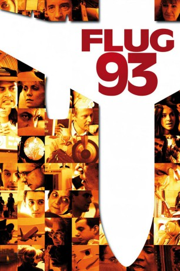
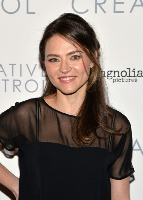
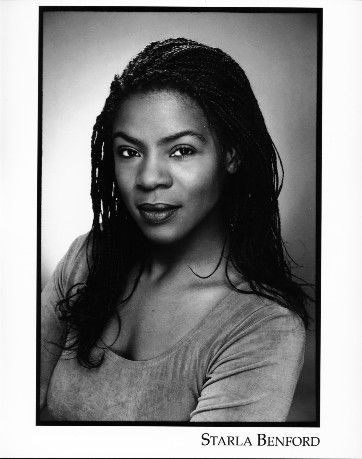

#5206 Flug 93
Alternativ: United 93
Auszeichnungen: für 2 Oscars nominiert 2 BAFTA-Awards gewonnen
 
 IMDB-Wertung: 7.6 / 10
IMDB-Wertung: 7.6 / 10  Metascore: 0
Metascore: 0 
Der Tag des 11. September 2001 beginnt für die Menschen von Flug United Airline 93 wie jeder andere. Doch nachdem sich das Flugzeug in den Himmel geschwungen hat, übernimmt eine Gruppe von islamistischen Terroristen die Kontrolle über die Maschine. Die Passagiere haben keine Ahnung wie ihnen geschieht, doch über geheime Telefonate mit ihren Angehörigen erfahren sie, dass es mit Hilfe von entführten Passagierflugzeugen Angriffe auf das World Trade Center und auf das Pentagon gegeben hat. Den Menschen ist klar, dass auch ihre Maschine als fliegende Bombe missbraucht werden soll. Die Passagiere an Bord entscheiden sich ihre Schicksal in die eigenen Hände zu nehmen und beschließen, die bewaffneten Terroristen zu überwältigen und die Maschine wieder in ihre Gewalt zu bringen, auch wenn das die Gefahr eines Absturzes mit sich zieht...
Jahr: 2006
Dauer: 110 Minuten
FSK: 12
Land: USA Studio: Universal PicturesTonspuren: DTS - ,
Untertitel: Deutsch,
Auflösung: 1080p (1920x816) Größe: 8949 MB
Genre: Thriller, Drama, Geschichte
Regisseur: Paul Greengrass
Drehbuch: Daniel Woodrell
Soundtrack:
Darsteller:
 Polly Adams als Deborah Welsh
Polly Adams als Deborah Welsh- Opal Alladin als CeeCee Lyles
- Trish Gates als Sandra Bradshaw
- Nancy McDoniel als Lorraine G. Bay
 David Alan Basche als Todd Beamer
David Alan Basche als Todd Beamer Richard Bekins als William Joseph Cashman
Richard Bekins als William Joseph Cashman Susan Blommaert als Jane Folger
Susan Blommaert als Jane Folger Christian Clemenson als Thomas E. Burnett, Jr.
Christian Clemenson als Thomas E. Burnett, Jr. Liza Colón-Zayas als Waleska Martinez
Liza Colón-Zayas als Waleska Martinez- Lorna Dallas als Linda Gronlund
- Denny Dillon als Colleen Fraser
-  Trieste Kelly Dunn als Deora Frances Bodley
- Kate Jennings Grant als Lauren Catuzzi Grandcolas
 Peter Hermann als Jeremy Glick
Peter Hermann als Jeremy Glick Marceline Hugot als Georgine Rose Corrigan
Marceline Hugot als Georgine Rose Corrigan Cheyenne Jackson als Mark Bingham
Cheyenne Jackson als Mark Bingham Corey Johnson als Louis J. Nacke, II
Corey Johnson als Louis J. Nacke, II- Masato Kamo als Toshiya Kuge
- Becky London als Jean Headley Peterson
- Jodie Lynne McClintock als Marion R. Britton
- Tom O'Rourke als Donald Peterson
- Simon Poland als Alan Anthony Beaven
 David Rasche als Donald Freeman Greene
David Rasche als Donald Freeman Greene Erich Redman als Christian Adams
Erich Redman als Christian Adams Michael J. Reynolds als Patrick Joseph Driscoll
Michael J. Reynolds als Patrick Joseph Driscoll John Rothman als Edward P. Felt
John Rothman als Edward P. Felt Daniel Sauli als Richard Guadagno
Daniel Sauli als Richard Guadagno Rebecca Schull als Patricia Cushing
Rebecca Schull als Patricia Cushing- Chloe Sirene als Honor Elizabeth Wainio
 Olivia Thirlby als Nicole Carol Miller
Olivia Thirlby als Nicole Carol Miller- Chip Zien als Mark Rothenberg
- Leigh Zimmerman als Christine Snyder
 Khalid Abdalla als Ziad Jarrah
Khalid Abdalla als Ziad Jarrah- Lewis Alsamari als Saeed Al Ghamdi
 Omar Berdouni als Ahmed Al Haznawi
Omar Berdouni als Ahmed Al Haznawi- Jamie Harding als Ahmed Al Nami
- Amanda Boxer als Cleveland Supervisor
- Ben Sliney als Himself
- Tobin Miller als Himself
 Michael Bofshever als John White
Michael Bofshever als John White Patrick St. Esprit als Major Kevin Nasypany
Patrick St. Esprit als Major Kevin Nasypany Gregg Henry als Col. Robert Marr
Gregg Henry als Col. Robert Marr- Peter Pellicane als Paul Thumser
- Jeff Lipman als Neads - Missile Controller , uncredited
- J.J. Johnson als Captain Jason Dahl
- Gary Commock als First Officer LeRoy Homer
-  Starla Benford als Wanda Anita Green
- Ray Charleson als Joseph DeLuca
 Tara Hugo als Kristin White Gould
Tara Hugo als Kristin White Gould- Joe Jamrog als John Talignani
Datei: X:\2006(A-F)\Flug 93 (2006, FSK12, 1920x816).mkv seit 30.12.2016
Festplatte: HD 2005(G-Z)-2006(A-Z)
 Es gibt insgesamt 56 Filme in der Gruppe '2006(A-F)'
Es gibt insgesamt 56 Filme in der Gruppe '2006(A-F)'